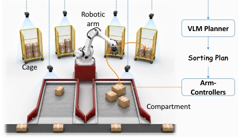
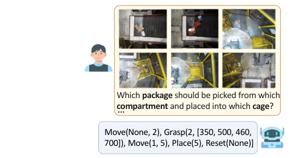
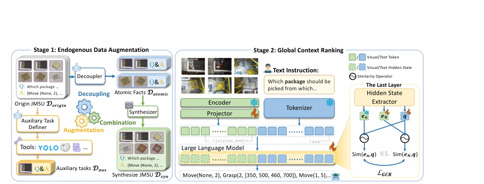
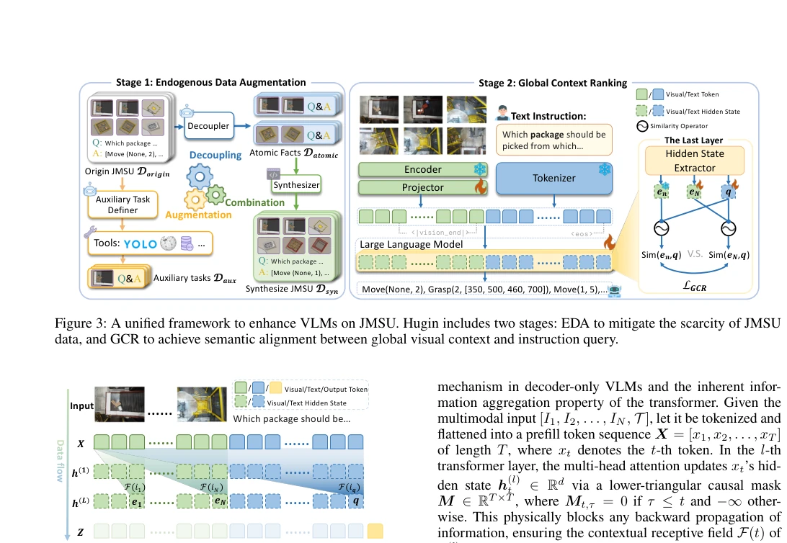

This paper names the logistics sorting system 'Hugin' (Odin's Raven), and the metaphor is quite apt. The core pain point is accurately grasped: dispersed multi-camera views cause VLMs to easily 'lose sight of one while attending to another.' EDA reorganizes data using atomic facts, GCR aligns global context using hidden states; the approach is clear, requires no changes to the inference architecture, and is friendly for industrial deployment. However, to offer a critique, this is essentially an SFT enhancement for specific scenarios, and generalization to non-logistics scenarios is questionable. Although the 15,000 package real-world test is impressive, the 73.1% accuracy is still distant from perfection, and it relies on underlying controllers, constituting a 'semi-end-to-end' approach. Nevertheless, for Embodied AI entering factories, this step is quite substantial and worth referencing.
研究动机Motivation
自主物流分拣系统 (ALSS) 需联合多场景理解 (JMSU)，但现有 VLM 多假设单视角或重叠视角 (Ahn et al. 2022; Ji et al. 2025)，难以处理空间离散相机。工业数据噪声大、标注稀缺 (Xu et al. 2025)，且长视觉上下文导致注意力分散 (Liu et al. 2024c)。传统增强破坏跨场景一致性。需解决数据稀缺与推理整合问题，使 VLM 能整合分散证据进行决策，填补通用预训练与具身需求间的鸿沟。
Autonomous Logistics Sorting Systems (ALSS) require Joint Multi-Scene Understanding (JMSU), but existing VLMs mostly assume single or overlapping views (Ahn et al. 2022; Ji et al. 2025), making it difficult to handle spatially discrete cameras. Industrial data is noisy and annotation-scarce (Xu et al. 2025), and long visual contexts cause attention dispersion (Liu et al. 2024c). Traditional augmentation disrupts cross-scene consistency. There is a need to address data scarcity and inference integration, enabling VLMs to integrate dispersed evidence for decision-making and bridge the gap between general pre-training and embodied requirements.

Figure 1: Illustration of ALSS. Based on the VLM, ALSS enables automated grasping of non-standard packages from compartments, handling, and stacking them into cages, ac- cording to diverse business requirements.

Figure 2: A JMSU sample. The VLM receives the synchro- nized views and produces a structured sorting plan.
方法Method
Hugin 含两阶段。EDA 将样本拆解为原子事实（如包裹数、位置），在操作约束下重组生成合成数据，保持逻辑一致且扩充训练分布。GCR 利用因果注意力机制，提取全局视觉上下文隐藏状态与指令意图的相似度，强制模型关注完整场景而非局部前缀。训练时加对比损失，推理无开销。数据流上，原始数据经 EDA 生成原子/合成/辅助任务，混合通用 VQA 防止遗忘。具体而言，GCR 通过 Stop-Gradient 固定局部上下文，优化全局与指令的对齐，确保模型不依赖单一视图。它利用 Transformer 的信息聚合特性，将多图像历史压缩为单一向量，通过 Hinge Loss 最大化全局与指令的相似度差值，从而提升跨场景推理能力。
Hugin comprises two stages. EDA decomposes samples into atomic facts (e.g., package count, position), reorganizing them under operational constraints to generate synthetic data, maintaining logical consistency and expanding the training distribution. GCR utilizes a causal attention mechanism to extract the similarity between global visual context hidden states and instruction intent, forcing the model to focus on the complete scene rather than local prefixes. Contrastive loss is added during training, incurring no inference overhead. In terms of data flow, raw data generates atomic/synthetic/auxiliary tasks via EDA, mixed with generic VQA to prevent forgetting. Specifically, GCR fixes local context via Stop-Gradient, optimizing global-instruction alignment to ensure the model does not rely on a single view. It leverages the information aggregation characteristics of Transformers, compressing multi-image history into a single vector, and maximizes the similarity difference between global context and instruction via Hinge Loss, thereby enhancing cross-scene reasoning capabilities.

Figure 3: A unified framework to enhance VLMs on JMSU. Hugin includes two stages: EDA to mitigate the scarcity of JMSU data, and GCR to achieve semantic alignment between global visual context and instruction query.

Figure 4: The data flow process during VLM training.
Constructed SortingBench (1000 samples, 4 layouts). Tested 5 open-source VLMs, with Qwen3-VL-8B showing a 15.2% improvement. Ablation studies demonstrate that both EDA and GCR are effective. Robustness tests (shuffled order, added interference images) performed better than SFT. Actual deployment on 15,000 packages achieved 73.1% accuracy. This proves VLM planning is feasible in logistics, and capabilities can be transferred to other embodied tasks. Furthermore, generic VQA capabilities did not significantly decline, indicating that domain adaptation did not compromise basic capabilities.